Original author: James Jackson Potter (moc.liamg@ikswokrettopjj)
Library release date: September 2015
This work was funded by an Alain
Bensoussan post-doctoral fellowship from the
European Research Consortium for Informatics and Mathematics (ERCIM)
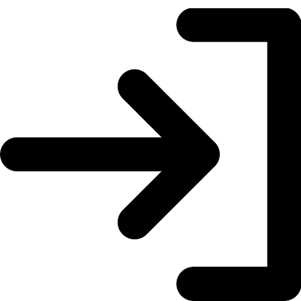 Overview
Software Requirements
Background Information
Package Description
Example
License
Acknowledgements
References
Many systems require a human to perform real-time control. To simulate these systems, a dynamic model of the human's control behavior is needed. The field of manual control has developed and validated such models, and this library contains implementations of a collection of these models from the literature. Python-based tools allow users to perform, in real time, the manual tracking tasks they design in Modelica. Parameter values in the manual controller models can be automatically tuned to either maximize tracking performance, or to match recorded control input from a user experiment.
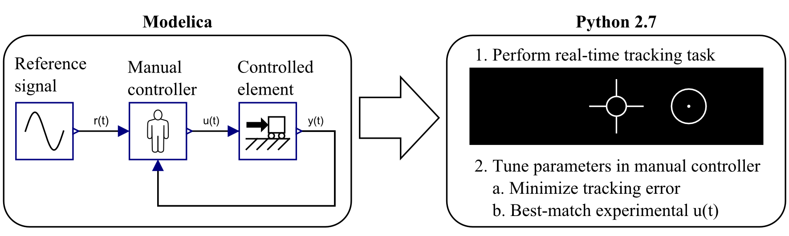
For Modelica library:
Modelica
For Python functions:
Python 2.7
Pygame
OpenModelica
OMPython
JModelica.org
There are many situations where a human operator attempts to make the output of a system follow a desired trajectory. For example, the top of Figure 1 shows the task of recording an athlete with a tripod-mounted video camera. The goal of the camera operator is to keep the athlete centered in the camera frame. The actual camera direction is compared to its desired direction (pointed directly at the athlete), and corrective actions are made by applying force to the tripod handle. This activity is similar to eye tracking, where a human keeps a moving object in the center of his or her vision (Jagacinski, 1977). In these activities, the human is an active part of a feedback control system. Other examples of manual tracking tasks include aiming a tank turret (Tustin, 1947; Kleinman and Perkins, 1974), driving an automobile (Bekey et al., 1977; Hess and Modjtahedzadeh, 1990), and piloting an aircraft (McRuer and Jex, 1967).
The bottom of Figure 1 shows a simplified diagram of the task. Blocks represent the camera operator's control behavior, and the camera and tripod's rotational dynamics. The athlete's direction relative to the tripod is the reference signal, r(t), the camera's actual direction is the camera state, y(t), and the angle between the actual and desired directions is the error, e(t). The operator's force on the handle is the command input, u(t).
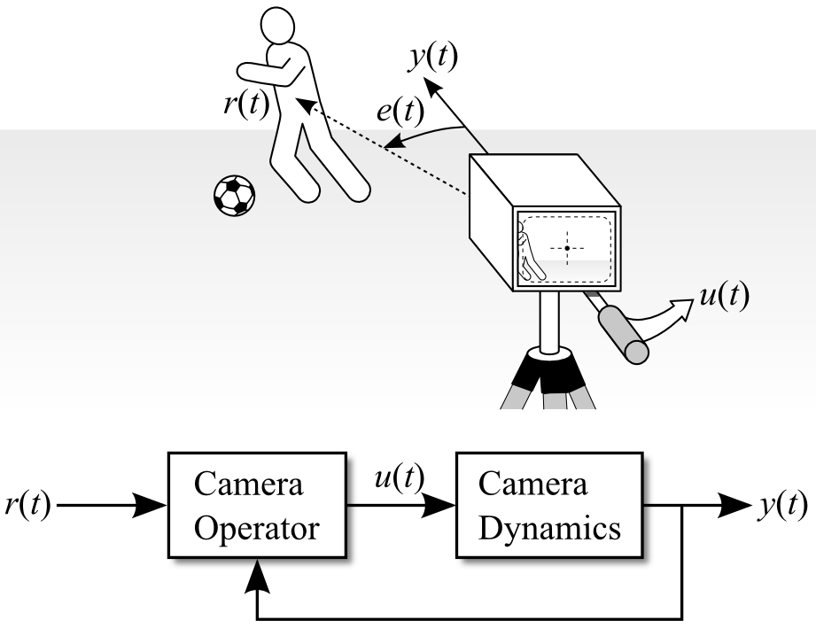
Figure 1. One-dimensional video camera tracking task.
Note that to simulate this system, a model of the human's control behavior must be specified. Such models can be found in the field of manual control, which uses the tools and techniques of control theory to study the control behavior of humans. A Modelica library that captures knowledge from this field would be useful to modelers of human-machine systems.
This website presents a library with models of human control behavior from the manual control literature. In addition, tools allow users to perform manual tracking tasks designed in Modelica, and to tune parameter values in the manual controller models to either maximize tracking performance, or to match recorded control input from user experiments.
Previous studies have made extensive use of single-axis manual tracking tasks to investigate the control behavior of humans performing continuous control. In a typical experimental tracking task, a human operator views a display on a computer screen and uses an input device, such as a joystick or force stick, to generate control input. An example display is shown in Figure 2. There are two objects on the screen: one is a target that represents the reference (desired) state, and the other is a cursor that represents the actual state of the controlled system. The human's goal is to make the cursor follow the target as closely as possible.
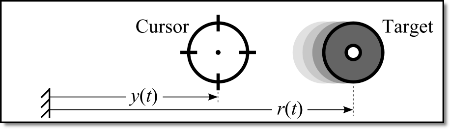
Figure 2. Display for manual tracking task.
Many situations require humans to perform multi-axis, multi-loop control tasks, so it might seem that studying one-dimensional control would be an unreasonable oversimplification. However, it has been found that multi-axis tracking performance is highly related to one-axis tracking (Todosiev et al., 1967), and that information about the human controller derived from single-axis tracking tasks can be applied to multi-loop tasks (McRuer et al., 1975).
In the tracking display of Figure 2, the target's motion is prescribed by a forcing function. This function should appear random to prevent the operator from predicting future behavior of the target, unless the real-world control task consists of highly predictable signals. This library, and much of manual control theory, focuses on the tracking of unpredictable signals.
From past studies, it has been shown that the sum of 5 or more sine waves is unpredictable to human operators (McRuer et al., 1965). An example summed-sine forcing function is shown in Figure 3. The individual sine waves on the left of Figure 3 are combined to yield the more complicated function on the right.
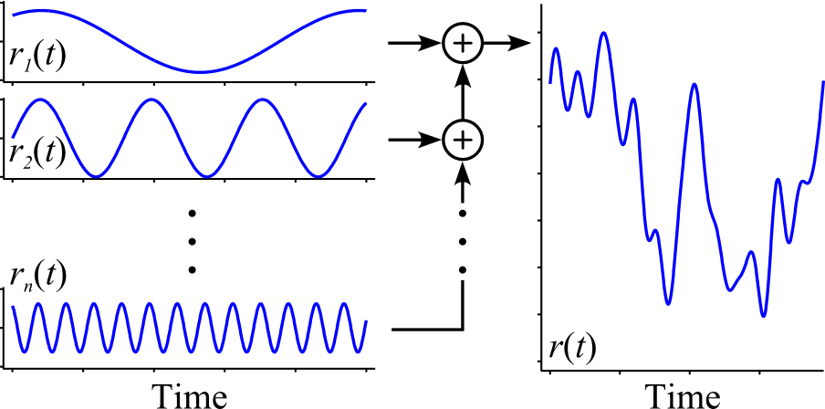
Figure 3. Sum of sines forcing function.
In general, low-frequency sine waves are given large amplitudes, and waves with increasing frequency are given increasingly small amplitudes (Jagacinski and Flach, 2003). The difficulty of tracking a given forcing function depends heavily on the velocity and acceleration of the target motion (Damveld et al., 2010).
The controlled element is the dynamic response of the cursor to control input, and it represents the real-world system under human control. A simple mechanical example is shown in the left side of Figure 4. A rolling cart with mass M is attached to ground by a damper with damping coefficient b, and the control input pushes the cart with a force of magnitude Ku(t). The equivalent controlled-element transfer function is shown in the right side of Figure 4. The cart exhibits a lagged velocity response with time constant M/b and steady-state velocity K/b. The units of these parameters depend on the units chosen for M, b, and K.
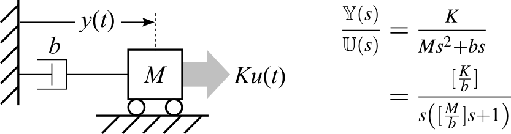
Figure 4. Mechanical example of a controlled element.
Simple models have been used to capture the primary behavior of certain degrees of freedom in aircraft (McRuer and Jex, 1967), automobiles, and other complicated systems. Many experiments have used the simplest controlled elements with position, velocity, and acceleration responses.
Human control behavior while tracking an unpredictable signal can be modeled using tools and techniques from control theory. A specific model will be called a manual controller model. These models are generally either structural or algorithmic in nature (McRuer, 1980). Structural models use explicit equations and parameters to model human control pathways and the human's resulting input-output response. Algorithmic models use a more implicit optimal control formulation, where only the human's total response is computed. This library includes only structural models. For a review of both kinds of models, see Hess (2006).
Structural manual controller models have taken many forms, but most include one or more of the control pathways shown in Figure 5. Nearly all controllers include the compensatory pathway, which acts on the error e(t) between the reference and measured state. Manual tracking experiments that display only this error, and not the reference and measured states independently, are called compensatory tracking tasks.
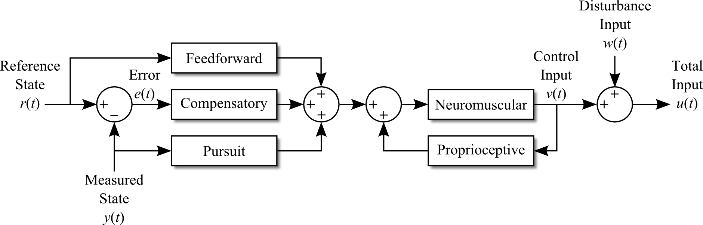
Figure 5. Manual controller signals and control pathways.
If both the reference state and the measured state are displayed to the human, then they can be used for the feedforward and pursuit control actions. The presence of pursuit information does not guarantee pursuit control will be used, and the absence of pursuit information does not guarantee pursuit control will not be used.
The neuromuscular filter accounts for the lag imposed by limb dynamics and neuromuscular delays. The human senses the filtered input using the proprioceptive pathway, and compares it to the desired input.
Once the human's control input is determined, a disturbance input is added. This can be used for a disturbance rejection task (Van Paassen and Mulder, 2006), or to add remnant to the controller model. Remnant accounts for the human's control input that is not predicted by the model. Most of the remnant appears to come from fluctuations in the effective time delay (McRuer 1980), nonsteady control behavior, and nonlinear anticipation or relay-like operations (McRuer et al., 1967). These effects are larger when tracking conditions are difficult (Hess, 1979). The remnant has been found to have fairly constant power with no major peaks, and it tends to be relatively small when tracking conditions are favorable (Wade and Jex, 1972).
Go to top
The previous section described elements of typical manual tracking tasks, and this section presents their implementation in the
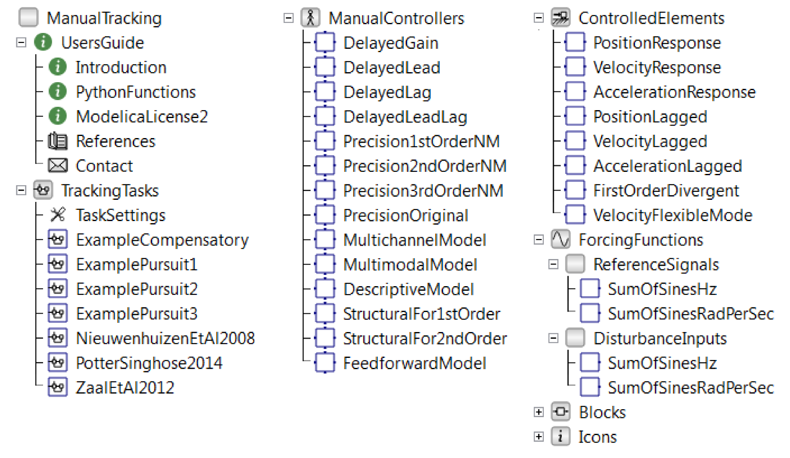
Figure 6. ManualTracking library overview.
This package only includes the summed sine wave signal, which is by far the most common signal used in manual tracking tasks. Frequency values can be either in units of Hz (with
All controlled elements included in the library are shown in Table 1. There are the basic position, velocity, and acceleration responses. There are also versions of these basic responses with an added first-order lag, making them less responsive at first, but eventually reaching the same steady-state position/velocity/acceleration.
Table 1. Controlled elements.
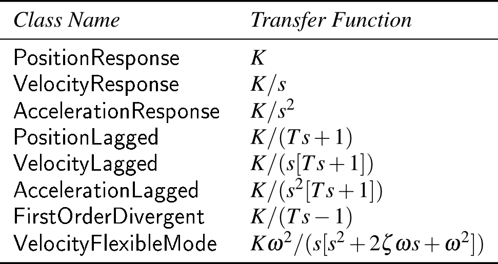
The unstable
Table 2 shows all manual controller models in equation form. The
Table 2. Manual controllers.
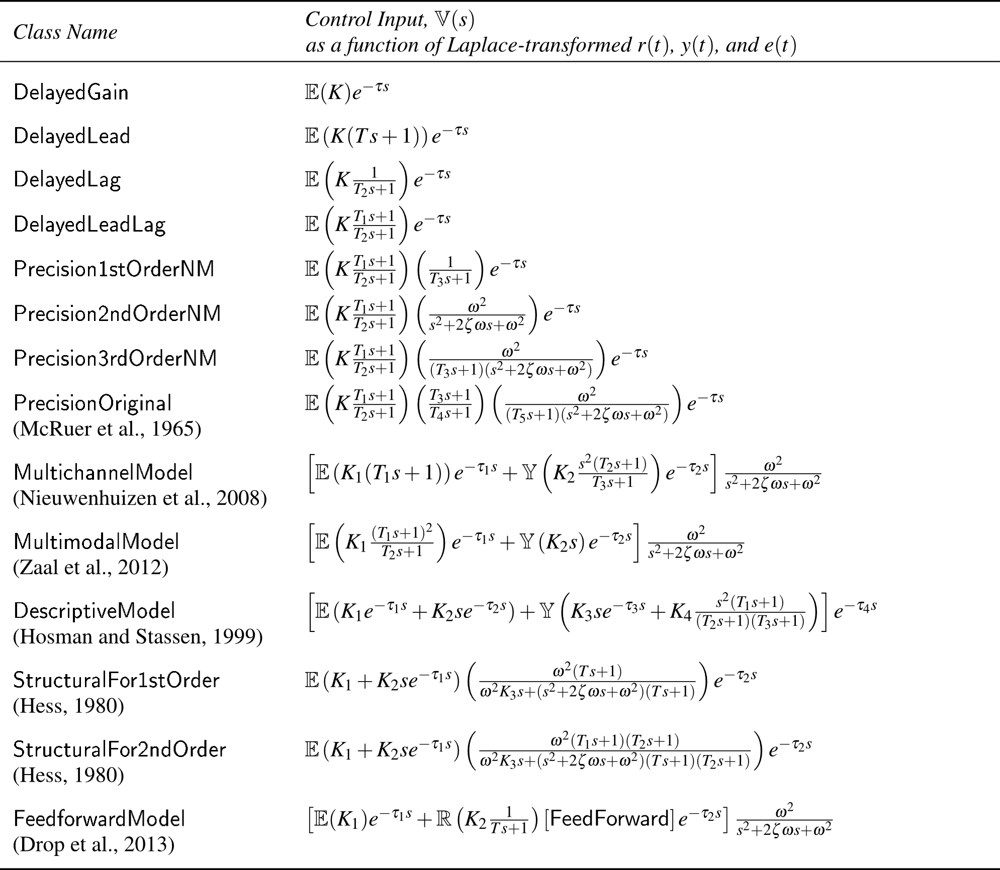
The following two models,
Blocks from the
A tracking task model should have the standard form shown in Figure 7, and it should be stored inside the
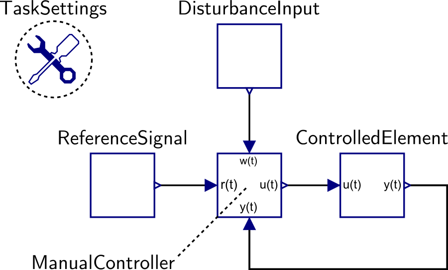
Figure 7. Example of tracking task.
An additional component, the
The previous sections have described purely Modelica-based components that can be run from within a Modelica simulation environment. Two additional capabilities are provided in the
An overview of the software is shown in Figure 8. In the
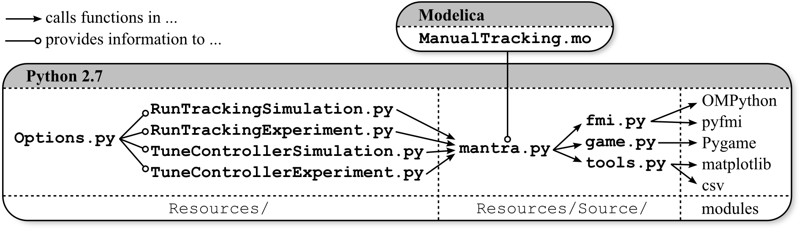
Figure 8. Software overview.
Each of the four main functions call
This function simulates the tracking task model specified in
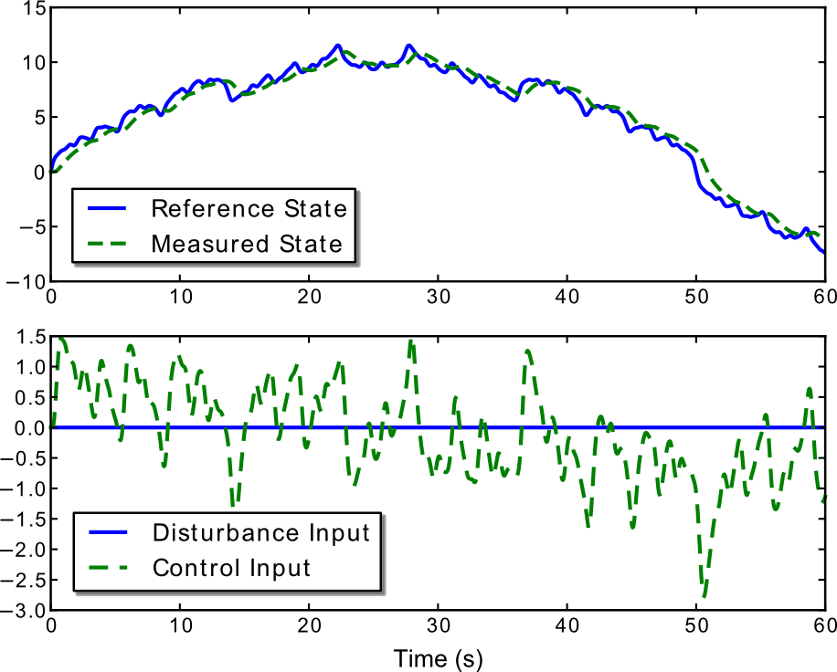
Figure 9. Plot of simulation results.
This function allows the user to perform a tracking task in real time. The tracking task model specified in
Next, Pygame looks for any joysticks connected to the computer. If no joystick is found, then the keyboard arrow keys may be used for control input. When a joystick is used, the experiment runs more smoothly and the parameter-fitting functions work much more effectively. Therefore, using a joystick for the experiment is highly recommended.
Then, two scaling factors are automatically calculated. One is the
Finally, the user is prompted to start the experiment. The tracking display is shown in Figure 10. Lines on the top and bottom of the screen mark the global coordinates, so that the target motion can be seen independently of the cursor motion. These lines can be hidden to create a compensatory task by setting
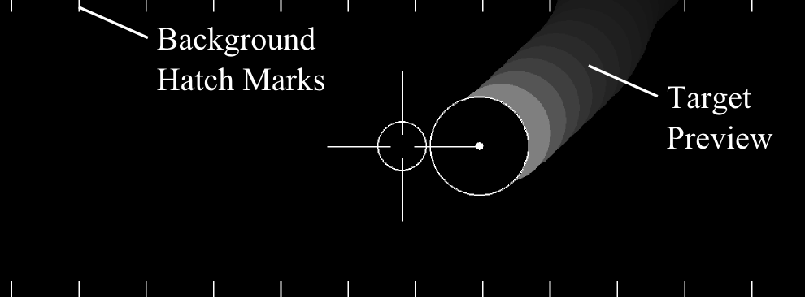
Figure 10. Display of manual tracking experiment.
Figure 10 also shows a preview of the target motion. Future motion is indicated by circles falling from the top of the screen. The topmost circle shows where the target will be
If desired, the user may adjust fundamental settings of the game in the
This function repeatedly simulates the tracking task with different parameter values in the manual controller, and finds values which yield the best tracking performance. This reflects an important finding in the literature: an experienced human operator has inherent human limitations (e.g., reaction time delay, neuromuscular lag, and ability to generate derivatives and higher-order leads), but behaves in a nearly optimal fashion given these limitations.
Mathematically, the function tries to minimize the integrated squared difference between y(t) and r(t). This is shown conceptually in Figure 11(a), where c(t) is the continuous cost to minimize. Because tracking performance is not a differentiable function of the controller parameters, a derivative-free optimization method such as the Nelder-Mead simplex method (Gedda et al., 2012) must be used.
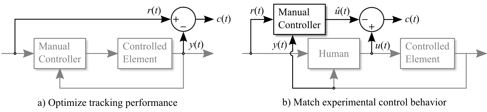
Figure 11. Tuning manual controller parameters by minimizing ∫[c(t)]²dt.
Some manual controller models contain many parameters, and attempting to tune all of them at once would be time-consuming and would likely yield poor results. Therefore, the user is allowed to select a subset of the parameters using a console prompt like this:
To tune
This function tunes the automatic manual controller to behave as much as possible like the human controller. The concept is shown in Figure 11(b). The goal is to minimize the difference between the experimentally recorded control input, u(t), and the simulated control input, û(t).
The input to the manual controller is the reference signal (and disturbance input, not shown in Figure 11), and the experimentally recorded controlled element state. Note that the tracking performance of the tuned controller might be very poor, because it does not attempt to optimize tracking performance. It simply tries to match control behavior of the user.
This section demonstrates basic use of the Modelica library and Python functions. Load the
Next, navigate to
If the function executed successfully, then try the real-time experiment. Run
After following these instructions, a window similar to Figure 10 appears. Use either the arrow keys or a joystick to make the crosshairs follow the target. Once the experiment is complete, a plot of the state and input trajectories is shown if
Next, try the manual controller tuning functions. Run the
Instead of tuning parameters to yield the best tracking performance, they can be tuned to fit experimental tracking performance. First, make sure
Preamble. The goal of this license is that Modelica related model libraries, software, images, documents, data files etc. can be used freely in the original or a modified form, in open source and in commercial environments (as long as the license conditions below are fulfilled, in particular sections 2c) and 2d). The Original Work is provided free of charge and the use is completely at your own risk. Developers of free Modelica packages are encouraged to utilize this license for their work.
The Modelica License applies to any Original Work that contains the following licensing notice adjacent to the copyright notice(s) for this Original Work:
Licensed by James J. Potter under the Modelica License 2
1. Definitions.
package <Name> ... end <Name>;” Modelica language element.2. Grant of Copyright License. Licensor grants You a worldwide, royalty-free, non-exclusive, sublicensable license, for the duration of the copyright, to do the following:
To reproduce the Original Work in copies, either alone or as part of a collection.
To create Derivative Works according to Section 1d) of this License.
To distribute or communicate to the public copies of the Original
Work or a Derivative Work under this License. No
fee, neither as a copyright-license fee, nor as a selling fee for
the copy as such may be charged under this License. Furthermore, a
verbatim copy of this License must be included in any copy of the
Original Work or a Derivative Work under this License.
For the matter of clarity, it is permitted A) to distribute or
communicate such copies as part of a (possible commercial)
collection where other parts are provided under different licenses
and a license fee is charged for the other parts only and B) to
charge for mere printing and shipping costs.
To distribute or communicate to the public copies of a Derivative
Work, alternatively to Section 2c), under any other license
of your choice, especially also under a license for
commercial/proprietary software, as long as You comply with Sections
3, 4 and 8 below.
For the matter of clarity, no
restrictions regarding fees, either as to a copyright-license fee or
as to a selling fee for the copy as such apply.
To perform the Original Work publicly.
To display the Original Work publicly.
3. Acceptance. Any use of the Original Work or a Derivative Work, or any action according to either Section 2a) to 2f) above constitutes Your acceptance of this License.
4. Designation of Derivative Works and of Modified Works. The identifying designation of Derivative Work and of Modified Work must be different to the corresponding identifying designation of the Original Work. This means especially that the (root-level) name of a Modelica package under this license must be changed if the package is modified (besides fixing of errors, adding vendor specific Modelica annotations, using a subset of the classes of a Modelica package, or using another representation, e.g. a binary representation).
5. Grant of Patent License. Licensor grants You a worldwide, royalty-free, non-exclusive, sublicensable license, under patent claims owned by the Licensor or licensed to the Licensor by the owners of the Original Work that are embodied in the Original Work as furnished by the Licensor, for the duration of the patents, to make, use, sell, offer for sale, have made, and import the Original Work and Derivative Works under the conditions as given in Section 2. For the matter of clarity, the license regarding Derivative Works covers patent claims to the extent as they are embodied in the Original Work only.
6. Provision of Source Code. Licensor agrees to provide
You with a copy of the Source Code of the Original Work but reserves
the right to decide freely on the manner of how the Original Work is
provided.
For the matter of clarity, Licensor might provide only a binary
representation of the Original Work. In that case, You may (a) either
reproduce the Source Code from the binary representation if this is
possible (e.g., by performing a copy of an encrypted Modelica
package, if encryption allows the copy operation) or (b) request the
Source Code from the Licensor who will provide it to You.
7. Exclusions from License Grant. Neither the names of
Licensor, nor the names of any contributors to the Original Work, nor
any of their trademarks or service marks, may be used to endorse or
promote products derived from this Original Work without express
prior permission of the Licensor. Except as otherwise expressly
stated in this License and in particular in Sections 2 and 5, nothing
in this License grants any license to Licensor’s trademarks,
copyrights, patents, trade secrets or any other intellectual
property, and no patent license is granted to make, use, sell, offer
for sale, have made, or import embodiments of any patent claims.
No license is granted to the trademarks of
Licensor even if such trademarks are included in the Original Work,
except as expressly stated in this License. Nothing in this License
shall be interpreted to prohibit Licensor from licensing under terms
different from this License any Original Work that Licensor otherwise
would have a right to license.
8. Attribution Rights. You must retain in the Source
Code of the Original Work and of any Derivative Works that You
create, all author, copyright, patent, or trademark notices, as well
as any descriptive text identified therein as an "Attribution
Notice". The same applies to the licensing notice of this
License in the Original Work. For the matter of clarity, “author
notice” means the notice that identifies the original
author(s).
You must cause the Source Code for any Derivative
Works that You create to carry a prominent Attribution Notice
reasonably calculated to inform recipients that You have modified the
Original Work.
In case the Original Work or Derivative Work is not provided in
Source Code, the Attribution Notices shall be appropriately
displayed, e.g., in the documentation of the Derivative Work.
9. Disclaimer
of Warranty.
The Original Work is provided under this
License on an "as is" basis and without warranty, either
express or implied, including, without limitation, the warranties of
non-infringement, merchantability or fitness for a particular
purpose. The entire risk as to the quality of the Original Work is
with You. This disclaimer of warranty constitutes an
essential part of this License. No license to the Original Work is
granted by this License except under this disclaimer.
10. Limitation of Liability. Under no circumstances and under no legal theory, whether in tort (including negligence), contract, or otherwise, shall the Licensor, the owner or a licensee of the Original Work be liable to anyone for any direct, indirect, general, special, incidental, or consequential damages of any character arising as a result of this License or the use of the Original Work including, without limitation, damages for loss of goodwill, work stoppage, computer failure or malfunction, or any and all other commercial damages or losses. This limitation of liability shall not apply to the extent applicable law prohibits such limitation.
11. Termination. This License conditions your rights to undertake the activities listed in Section 2 and 5, including your right to create Derivative Works based upon the Original Work, and doing so without observing these terms and conditions is prohibited by copyright law and international treaty. Nothing in this License is intended to affect copyright exceptions and limitations. This License shall terminate immediately and You may no longer exercise any of the rights granted to You by this License upon your failure to observe the conditions of this license.
12. Termination for Patent Action. This License shall terminate automatically and You may no longer exercise any of the rights granted to You by this License as of the date You commence an action, including a cross-claim or counterclaim, against Licensor, any owners of the Original Work or any licensee alleging that the Original Work infringes a patent. This termination provision shall not apply for an action alleging patent infringement through combinations of the Original Work under combination with other software or hardware.
13. Jurisdiction. Any action or suit relating to this License may be brought only in the courts of a jurisdiction wherein the Licensor resides and under the laws of that jurisdiction excluding its conflict-of-law provisions. The application of the United Nations Convention on Contracts for the International Sale of Goods is expressly excluded. Any use of the Original Work outside the scope of this License or after its termination shall be subject to the requirements and penalties of copyright or patent law in the appropriate jurisdiction. This section shall survive the termination of this License.
14. Attorneys’ Fees. In any action to enforce the terms of this License or seeking damages relating thereto, the prevailing party shall be entitled to recover its costs and expenses, including, without limitation, reasonable attorneys' fees and costs incurred in connection with such action, including any appeal of such action. This section shall survive the termination of this License.
15. Miscellaneous.
This work was fully supported by an ERCIM "Alain Bensoussan" post-doctoral research fellowship, hosted by VTT Technical Research Centre of Finland. The author wishes to thank A. Ashgar, A. Pop, and M. Sjölund for technical advice related to OMPython and FMUs.
Go to topG. A. Bekey, G. O. Burnham, and J. Seo. Control theoretic models of human drivers in car following. Human Factors, 19(4):399--413, Aug. 1977. H. J. Damveld, G. C. Beerens, M. M. van Paassen, and M. Mulder. Design of forcing functions for the identification of hu- man control behavior. AIAA Journal of Guidance, Control, and Dynamics, 33(4):1064--1081, Jul.-Aug. 2010.
F. M. Drop, D. M. Pool, H. J. Damveld, M. M. van Paassen, and M. Mulder. Identification of the feedforward component in manual control with predictable target signals. IEEE Transactions on Cybernetics, 43(6):1936--1949, Dec. 2013. P. Fritzson, P. Aronsson, H. Lundvall, K. Nyström, A. Pop, L. Saldamli, and D. Broman. The OpenModelica Modeling, Simulation, and Software Development Environment. Simulation News Europe, 44(45), Dec. 2005. S. Gedda, C. Andersson, J. Äkesson, and S. Diehl. Derivative-free parameter optimization of functional mock-up units. In Proc. 9th Int. Modelica Conf., Munich, Germany, Sep. 2012. R. A. Hess. A rationale for human operator pulsive control behavior. Journal of Guidance and Control, 2(3):221--227, May-Jun. 1979. R. A. Hess. A structural model of the adaptive human pilot. AIAA Journal of Guidance, Control, and Dynamics, 3(5):416--423, Sep.-Oct. 1980. R. A. Hess. Feedback Control Models -- Manual Control and Tracking, chapter 38, pages 1249--1294. John Wiley & Sons, Inc., Hoboken, NJ, 3 edition, 2006. R. A. Hess and A. Modjtahedzadeh. A control theoretic model of driver steering behavior. IEEE Control Systems Magazine, 10(5):3--8, Aug. 1990. doi:10.1109/37.60415. R. Hosman and H. Stassen. Pilot's perception in the control of aircraft motions. Control Engineering Practice, 7:1421-- 1428, 1999. R. J. Jagacinski. A qualitative look at feedback control theory as a style of describing behavior. Human Factors, 19:331--347, Aug. 1977. R. J. Jagacinski and J. M. Flach. Control Theory for Humans: Quantitative Approaches to Modeling Performance. CRC Press, New York, NY, 2003. H. R. Jex, J. D. McDonnell, and A. V. Phatak. A "critical" tracking task for manual control research. IEEE Transactions on Human Factors in Electronics, HFE-7(4):138--145, Dec. 1966. doi:10.1109/THFE.1966.232660. J. Äkesson, K.-E. Ärzén, M. Gäfvert, T. Bergdahl, and H. Tummescheit. Modeling and optimization with optimica and jmodelica.org---languages and tools for solving large-scale dynamic optimization problems. Computers and Chemical Engineering, 34(11):1737--1749, Nov. 2010. D. L. Kleinman and T. R. Perkins. Modeling human performance in a time-varying anti-aircraft tracking loop. IEEE Transactions on Automatic Control, AC-19(4):297--306, Aug. 1974. D. T. McRuer. Human dynamics in man-machine systems. Automatica, 16(3):237--253, May 1980. D. T. McRuer and H. R. Jex. A review of quasi-linear pilot models. IEEE Transactions on Human Factors in Electronics, HFE-8(3):231--249, Sep. 1967. doi:10.1109/THFE.1967.234304. D. T. McRuer, D. Graham, E. S. Krendel, and W. Reisner. Human pilot dynamics in compensatory systems. Technical Report AFFDL-TR-65-15, Air Force Flight Dynamics Lab- oratory, Wright-Patterson AFB, OH, 1965. D. T. McRuer, D. Graham, and E. S. Krendel. Manual control of single-loop systems: Part I. Journal of the Franklin Institute, 283(1):1--29, Jan. 1967. D. T. McRuer, D. H. Weir, H. R. Jex, R. E. Magdaleno, and R. W. Allen. Measurement of driver-vehicle multiloop response properties with a single disturbance input. IEEE Transactions on Systems, Man, and Cybernetics, SMC-5(5):490--497, 1975. doi:10.1109/TSMC.1975.5408371. F. M. Nieuwenhuizen, P. M. T. Zaal, M. Mulder, M. M. van Paassen, and J. A. Mulder. Modeling human multichannel perception and control using linear time-invariant models. Journal of Guidance, Control, and Dynamics, 31(4):999--1013, Jul.-Aug. 2008. J. J. Potter and W. E. Singhose. Effects of input shaping on manual control of flexible and time-delayed systems. Human Factors, 56(7):1284--1295, Nov. 2014. R.S. Shirley and L.R. Young. Motion cues in man-vehicle control: effects of roll-motion cues on human operator's behavior in compensatory systems with disturbance inputs. IEEE Transactions on Man-Machine Systems, 9(4):121--128, Dec. 1968. E. P. Todosiev, R. E. Rose, and L. G. Summers. Human performance in single and two-axis tracking systems. IEEE Transactions on Human Factors in Electronics, HFE-8(2):125--129, Jun. 1967. A. Tustin. The nature of the operator's response in manual control, and its implications for controller design. Journal of the Institution of Electrical Engineers, 94(2):190--206, May 1947. M. M. Van Paassen and M. Mulder. International Encyclopedia of Ergonomics and Human Factors, volume 1, chapter Identification of Human Control Behavior, pages 400--407. Taylor and Francis, London, 2 edition, 2006. A. R. Wade and H. R. Jex. A simple Fourier analysis technique for measuring the dynamic response of manual control systems. IEEE Transactions on Systems, Man, and Cybernetics, SMC-2(5):638--643, Nov. 1972. doi:10.1109/TSMC.1972.4309192. P. M. T. Zaal, D. M. Pool, M. M. van Paassen, and M. Mulder. Comparing multimodal pilot pitch control behavior between simulated and real flight. Journal of Guidance, Control, and Dynamics, 35(5):1456--1471, Sep.-Oct. 2012. Go to top